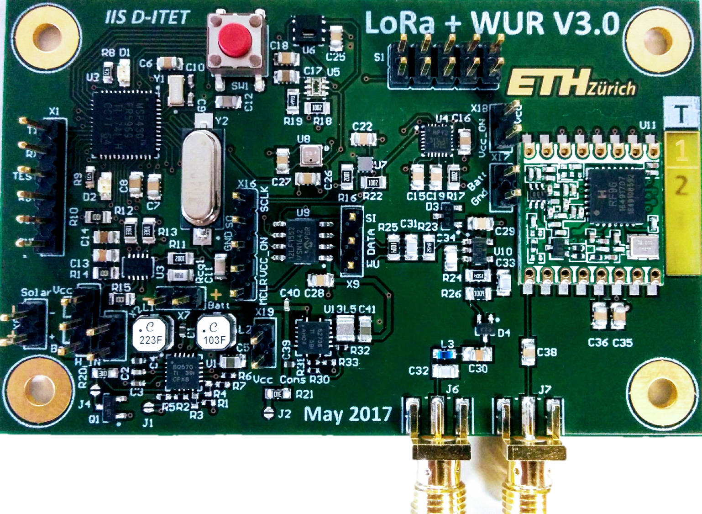

New Long-Range radio technologies have recently emerged in the IoT landscape. These technologies work in the Sub-GHz bands, allowing low-power communications over long distances. As a result, LoRa is now been considered a candidate radio technology for many wireless sensor network (WSN) applications, especially those that require extended coverage such as smart city, wildlife or infrastructure monitoring. Nonetheless, WSN researchers have produced a vast number of energy efficient networking protocols, raising the question of how much of the last decade research outcome is actually applicable to LoRa base networks and can be re-used without reinventing the wheel. To address this question, the Contiki Operating System can be regarded as a key enabler, as it has received wide adoption both from academia and industry, and supports various standard networking protocols such as Collection Tree Protocol (Contiki Collect), IPv6 over Low-Power Wireless Personal Area Networks (6LoWPAN), and IPv6 Routing Protocol for Low-Power and Lossy Networks (RPL). The barrier, however, consists in the inability to directly run ContikiOS atop LoRa platforms.
To fill this gap, we introduce KRATOS, a low-cost LoRa platform running ContikiOS. Specifically, the open source Contiki port is introduced for the LoRa platform that includes:
- MSP430FR5969 Microcontroller from Texas Instruments, extending the Contiki Hardware support list. This will enable to easily interface radios that are already supported in Contiki such as CC1200, CC2420, CC2520.
- Semtech LoRa radio transceiver, especially SX1276 to enable long-range application designs.
- The hardware and the software design of the platform and its tool-chain bundled as KRATOS are released as open source.
Getting Started
These instructions will guide you to get started with Contiki LoRa for development and testing purposes. To get the most out of the information outlined here, we assume the reader/user has the basic ContikiOS knowledge and how to build and compile applications. First clone the GIT repo for this port.
git clone https://github.com/rajeev1986/contikios-for-lora.gitTo kickstart, go to
examples/rime/unicast-seqno make NODE_ID=2This will compile the binaries for MSP430FR5969 Platform and you should see the following file.
example-unicast.hexUpload the code following the instructions below. The binary with NODE_ID=2 should be uploaded to the End device that will generate and send data packets while binary with NODE_ID=1 should be uploaded to the base station/sink node.
Flashing the MSP430FR5969 with TI UniFlash Programmer
First download and install UniFlash Programmer from here. The example-unicast.hex is the the binary or image that you need to flash the MSP430FR5969 with. Once you have UniFlash Programmer up and running, connect the MSP430FR5969 platform. To perform flash operations on your device, you will need to launch a flash session configured for the MSP430FR5969 MCU. Start a session by selecting the MSP430FR5969 from the MSP list. Once you have selected MSP430FR5969, the connection is automatically chosen for you. Choose the .hex for flashing by clicking the Browse button, and then click on Load Image. Congratulations you have programmed your MSP430FR5969 successfully!
Supported Platform
Current Contiki port for LoRa only supports MSP430FR5969 MCU from Texas Instruments and SX1276/77/78/79 LoRa radio module from Semtech. To provide a complete sensor mote, we also open source the design of our LoRa platform shown below. Contiki for LoRa is currently optimized for the developed platform providing all the necessary hardware and software interfaces for communicating over LoRa.

Hardware Architecture

Software Architecture

Team
LoRa mote was developed by the IIS group at ETH Zurich while the ContikiOS port is provided by E3DA group at the Fondazione Bruno Kessler and in collaboration with D3S at the University of Trento, Italy. The KRATOS team consists of Rajeev Piyare, Amy Murphy, Michele Magno, and Luca Benini. Please contact us with any queries or for more information.
Getting Involved
There are several ways to get involved with the KRATOS Project! These include building and deploying full networking stack for LoRa platforms, deploying new sensor modules on our existing platform, or deploying new applications on existing sensor modules using ContikiOS. Hardware design improvements and optimization of ContikiOS for LoRa is most welcome. If you would like to contribute, please email the KRATOS Team.
Code
Disclaimer: Although we tested the code extensively, ContikiOS for LoRa and sensor mote are research prototype that likely contain bugs. We take no responsibility for and give no warranties in respect of using the code.
License
Licensed under either of
at your option.